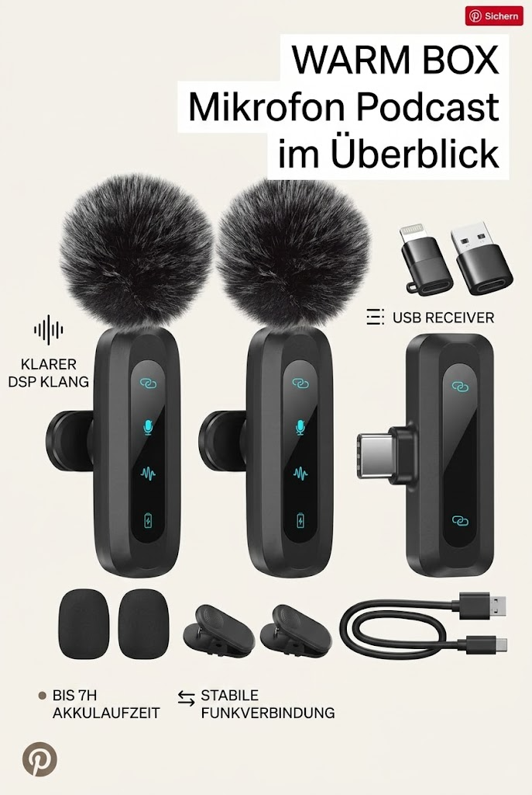

Kabelloses Lavalier-Mikrofon für iPhone, iPad, Android-Handy
WARM BOX
Kabelloses Lavalier-Mikrofon für iPhone, iPad, Android-Handy, 2er-Pack Mini-Mikrofon mit Rauschunterdrückung, Auto-Pairing und Stummschaltung und Reverb für Vlogging, Videoaufnahmen, TikTok, YouTube

Angaben des Herstellers
- 【KLARER KLANG & STABILE VERBINDUNG】Ausgestattet mit einem fortschrittlichen DSP-Chip garantiert dieses Mini-Mikrofon einen kristallklaren Klang und eine stabile Audioübertragung mit minimalen Störungen. Das Ansteckmikrofon bietet einen klaren, hochwertigen Klang für Videoaufnahmen, Interviews, Live-Streams, Podcasts und vieles mehr. Seine große Reichweite (20 Meter) garantiert verlustfreie und verzerrungsfreie Aufnahmen oder Übertragungen und macht es ideal für den Einsatz im Innen- und Außenbereich.
- 【AUTOMATISCHES PAIRING】Das drahtlose Mikrofon ist auf Komfort ausgelegt und macht Bluetooth, Apps oder Internetverbindungen überflüssig. Dank seiner automatischen Kopplungsfunktion verbindet sich das Ansteckmikrofon automatisch, sobald Sie es einschalten und an Ihr Gerät anschließen, ohne dass eine manuelle Kopplung erforderlich ist. Diese Funktion spart Ihnen Zeit und gewährleistet einen reibungslosen Betrieb, sodass es sich perfekt für Benutzer eignet, die sofort mit der Aufnahme beginnen müssen, egal ob Sie unterwegs sind oder es eilig haben.
- 【LANGE AKKULAUFZEIT】Das drahtlose Mikrofon bietet eine beeindruckende Akkulaufzeit von bis zu 7 Stunden Dauerbetrieb pro Mikrofon oder insgesamt 14 Stunden, wenn beide Mini-Mikrofone gleichzeitig verwendet werden. Dank dieser langen Akkulaufzeit eignet es sich ideal für längere Aufnahmesessions, Interviews, Podcasts oder Live-Übertragungen, ohne dass Sie sich Gedanken über einen leeren Akku machen müssen. Darüber hinaus können Sie Ihr Mikrofon mit dem im Lieferumfang des iPhone-Mikrofons enthaltenen USB-C-Ladekabel ganz einfach für den späteren Gebrauch aufladen
- 【BENUTZERFREUNDLICHE FUNKTIONEN】Dieses drahtlose Mikrofon bietet drei fortschrittliche Audiofunktionen, die Ihr Aufnahmeerlebnis verbessern. Mit der Stummschaltfunktion können Sie das USB-C-Mikrofon durch zweimaliges Antippen einfach stummschalten, während die Geräuschunterdrückungsfunktion Die Hallfunktion, die sich perfekt für Musikschaffende oder Sprachaufnahmen eignet, gibt Ihnen die vollständige Kontrolle über Ihren Ton. Mit einem einfachen Knopfdruck können Sie diese Funktionen an Ihre Aufnahmeumgebung und Ihre Bedürfnisse anpassen.
- 【BREITE KOMPATIBILITÄT】Dieses drahtlose Ansteckmikrofon ist sehr vielseitig und mit einer Vielzahl von Geräten kompatibel, darunter iPhone, iPad, Android-Smartphones mit Typ-C-Anschluss, Laptops und Desktop-Computer über USB-C-, USB-A- und Lightning-Adapter. Egal, ob Sie ein iPhone für Social-Media-Inhalte, ein Android-Smartphone für Live-Streaming oder einen Laptop für Podcasts verwenden, dieses iPhone-Mikrofon lässt sich einfach und flexibel ohne zusätzliche Adapter verwenden.
- 【KOMPLETTPAKET】Das USB-C-Mikrofonset umfasst zwei Mini-Mikrofone, zwei um 360° drehbare Mikrofonklemmen für eine flexible Positionierung, einen USB-C-Empfänger, USB-C-zu-Lightning- und USB-C-zu-USB-A-Adapter sowie ein USB-C-Ladekabel und eine Bedienungsanleitung. Mit diesem Komplettpaket haben Sie alles, was Sie brauchen, um sofort mit der Aufnahme zu beginnen. Dank einer einjährigen Garantie und einer 30-tägigen kostenlosen Rückgabemöglichkeit können Sie sich auf die Qualität und Langlebigkeit Ihres Kaufs verlassen.
Werbung. Diese Seite enthält Partnerlinks: Als Amazon-Partner verdiene ich an qualifizierten Käufen. Für dich ändert sich nichts am Preis. Preise und Verfügbarkeit stehen bei Amazon und ändern sich laufend.